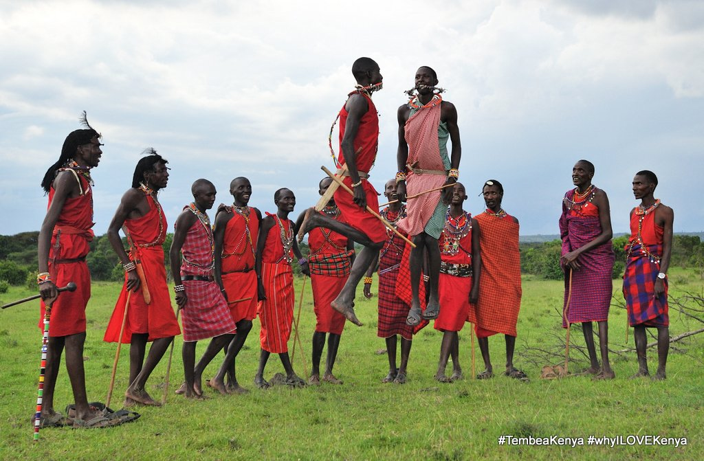
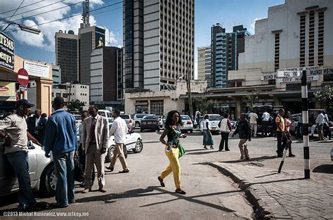
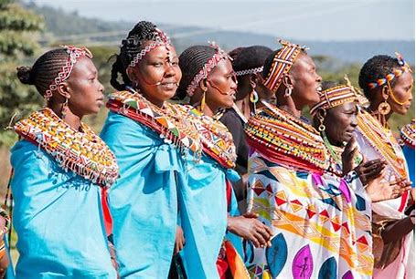

Kenya is a multilingual country. Although the official languages are Swahili and English, there are actually a total of 62 languages spoken in the country (according to Ethnologue).
These mainly consist of tribal African languages as well as a minority of Middle-Eastern and Asian languages spoken by descendants of foreign settlers (i.e. Arabic, Hindi, etc).
The African languages come from three different language families - Bant Languages (spoken in the center and southeast), Nilotic languages (in the west), and Cushitic languages (in the northeast).
Make Kenya the excuse for your next cultural tour destination. Kenya is home to 42 different, unique cultures. Also inhabited by Europeans, Asians, Indians and nationalities from different parts of the world, the different cultures that have come together in Kenya form our identity.


